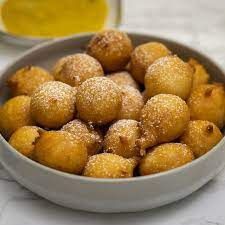

Mikate:

An african dish with a semblance to donuts
Description:
This food item has been known by many names from different reaches of the world such as
'beignets', 'puff puff' and mikate. I had been eating them frequently growing up in casual
settings or even at events and parties. However, the first time I made them was quite recently
with my dad who grew up with people selling them on the streets in Congo. Despite my prior
beliefs, the recipe is quite easy and simple.
Ingredients:
- 4 cups of self raising flour
- 1 cup of granulated sugar
- 1.5 cup of lukewarm water
Steps:
- Firstly, place self raising flour into a bowl and make a hole in the centre.
- Inside of that hole, pour your sugar and add some lukewarm water progressively.
- After that step is complete, mix the dough vigorously, get in that arm workout.
- As soon as air bubbles begin to burst, you know that the dough is ready.
- Now, begin to head up oil in a pot/ fryer to 175C.
- Add the dough by getting a dough ball about the size of a spoon and placing it into the oil carefully.
- Finally, once it has browned, remove it and voila ready and hot to eat